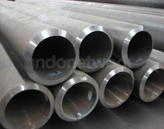

Jual Floor Deck Harga Murah di Jakarta Timur ☎ 0822 1330 1196 (Zulkarnaen)
Galvalum sudah menjadi primadona bagi banyak orang yang bekerja dalam industri pembangunan. Ini membuktikan bahwa atap adalah kebutuhan primer setiap bangunan. Layaknya projek pembangunan yang magak di tengah jalan karena tidak mempunyai atap yang bisa dipakai di atasnya. Atap seperti halnya namanya membutuhkan rangka dan atap utama sebagai bahan penutup sebuah bangunan. Selain atap, adapula rangka atap yang berfungsi sebagai penyangga atap. Banyak sekali jenis ragam atap mulai dari yang konvensional sampai modern yang dapat digunakan dalam sebuah pembangunan. Apa yang terjadi? Tentu anda tahu, atap tersebut tidak akan bertahan lama dan bahkan bisa langsung roboh karena tidak adanya pondasi yang menyangganya. Maka beberapa penjabaran kami dapat anda simak.
Distributor & Supplier Floor Deck (Bondex)

Produk material ini berfungsi untuk menggantikan fungsi bekisting pada saat melakukan pengecoran plat pada lantai. Selain itu, Floor Deck ini bisa dipasang pada konstruksi baja ataupun beton serta didukung dengan data perencanaan.
Floor deck berkualitas tinggi bisa anda dapatkan dengan mudah yaitu mengunjungi situs dis.or.id. Anda juga bisa langsung memesannya ataupun hanya ingin mengetahui detail harga yang di patok dari floor deck Jakarta Timur tersesbut.
Info Pemesanan Selengkapnya
Google Maps: https://www.google.com/maps/d/u/0/viewer?mid=1vSGA7eD7ctB-ierGsro9yf6LdDAQHeLS&ll=-6.2537250295094555%2C106.82745&z=15
Note: https://www.facebook.com/notes/distributor-of-industrial-supply/kontraktor-jasa-floor-hardener/1783168878649658/
Event: https://www.facebook.com/events/534395173592364/
Portfolio Produk: https://www.facebook.com/1681607345472479/photos/?tab=album&album_id=1685055588460988
Distributor & Supplier Besi Beton

Beragam jenis beton tersebut bisa diaplikasikan untuk berbagai kebutuhan pembangunan. Besi beton sendiri adalah material yang biasa digunakan dalam konstruksi dengan kekuatan yang sangat besar serta tahan terhadap berbagai guncangan dan tekanan. Besi beton dapat menjadi pondasi pada bangunan yang kuat sehingga membuat bangunan yang aplikasikan besi ini dapat kokoh dan tahan lama. Pengaplikasian besi beton pada suatu bangunan kini telah banyak digunakan karena banyak keunggulan yang diberikan oleh Besi beton.
Besi beton polos sangat jarang digunakan kecuali digunakan sebagai kolom.
Kedua jenis besi beton di atas dapat anda beli dengan mengunjungi situs dis.or.id. Anda bisa mendapatkan besi beton dengan harga yang sangat murah dan terjangkau.
Distributor & Supplier Steel Grating

Salah satunya dengan menggunakan grating dalam kombinasi pembangunan. Umumnya, Grating digunakan untuk kolam renang. Tetapi, jangan hanya memperhatikan harga karena Anda harus mempertimbangkan kualitasnya terlebih dahulu. Permukaan atas grating ini bergerigi sehingga saat di aplikasi pada bangunan tidak terasa licin. Grating ini bisa dirangkai plat strip besi baja dan besi ulir yang dilas pada permukaan silangnya sehingga akan membuat bangunan lebih kokoh dan kuat.
Kini anda bisa mendapatkan steel grating dengan harga yang sangat murah namun tetap memiliki kualitas dan mutu yang terbaik dengan mengunjungi dis.or.id. Terdapat beberapa ukuran yang bisa anda pesan sesuai dengan kebutuhan pembangunan anda. Memesan steel grating di dis.or.id pastinya anda tidak akan merasa rugi.
Distributor & Supplier Pipa (Hitam/Gas, Galvanis)

Pipa hitam gas galvanis pemanfaatannya sangat berbeda dengan jenis pipa pada umumnya, banyak sekali manfaat yang diperoleh dengan mengaplikasikan jenis pipa ini. Pipa hitam banyak sekali diaplikasikan pada area pertambangan minyak gas karena ia memiliki struktur yang 3 kali lebih kuat dari jenis pipa biasa. Karena sudah terlapisi dengan stainless steel pipa ini dapat diaplikasikan pada segala kondisi cuaca di Indonesia. Ukuran pipa hitam yang terjual adalah ½ inc sampai 40 inc. Hubungi segera kontak yang telah tersedia untuk informasi lebih detail, kami menerima segala kebutuhan besi baja anda kapanpun dan dimanapun.
Distributor & Supplier Kawat Bronjong/Gabion

Kawat bronjong bisa bertahan sangat lama karena kawat ini tidak mudah berkarat. Kawat ini juga ada yang berbahan galvanis. Ini berbentuk seperti anyaman yang terbuat dari kawat biasa. Namun, ada juga kawat bronjong PVC yang dilapisi dengan plastik. Anda bisa lihat tumpukan bebatuan di pinggir pantai yang dirantai dengan kawat bronjong. Selain itu, kawat ini juga digunakan sebagai pemecah gelombang ringan.
Jika sat ini anda sedang membutuhkan kawat bronjong, anda bisa langsung saja mengunjungi dis.or.id. Karena, disan anda bisa mendapatkan kawat bronjong dengan berbagi ukuran dengan kualitas dan mutu terbaik. Sehhingga, anda bisa leluasa memilih kawat bronjong mana yang susuai dengan yang anda butuhkan.
Distributor & Supplier WF H-beam

Saat ini, jenis besi WF memang banyak dicari. Besi ini dijual dengan harga yang cukup murah dan terjangkau sehingga tidak terlalu mahal. Besi jenis ini juga cocok untuk Anda pakai guna membangun rumah, industri, jalan raya, pagar, pabrik, dan masih banyak lagi lainnya. Entah dari sisi kekuatan tekan nya atau tariknya.
Jika membawanya Anda juga tidak perlu khawatir keberatan karena besi ini lebih ringan dan praktis.
Untuk itu bagi anda yang sedang mencari besi baja dengan kualitas terbaik. Disana anda bisa mendapatkan besi wf yang anda inginkan. Pastinya dengan harga yang sangat terjangkau.
Distributor & Supplier Expanded Metal

Expanded metal ini merupakan lembaran baja yang berbentuk jala yang memiliki lubang-lubang yang homogen serta sangat pas jika dimanfaatkan untuk berbagai aplikasi selain pagar BRC. Expanded Metal memiliki corak yang sangat unik dengan berbagai bentuk berbeda. Expanded Metal memiliki keunggulan dibandingkan dengan yang lain dari sisi kekuatannya yang cukup bagus serta biasa digunakan sebagai instalasi pagar, lantai, ataupun dinding. Selain itu, Expended Metal juga dikenal mampu menahan beban berat, memiliki permukaan yang anti slip/tidak licin, dan juga dikenal tahan karat untuk material yang dari alumunium.
Kini anda bisa membeli expanded metal yang anda inginkan dengan mengunjungi dis.or.id. Terdapat berbagai ukuran dari expanded metal yang bisa anda pilih dan anda pesan sekarang juga.
Distributor & Supplier Plat (Hitam, Kapal, Bordes, Strip)
.jpg)
Pada umumnya disebut plate kapal dikarenakan biasa digunakan untuk bahan pembuatan badan kapal dan mempunyai standart spesifikasi material yang beragam untuk spesifikasi. Dis.or.id menjual plat besi yang anda butuhkan dengan harga yang murah. Mahalnya harga tergantung dari ketebalan besi, motif, dan campuran bahan yang digunakan. Plat besi memang ada yang tipis dan tebal, perihal ukuran ini akan kita sampaikan secara detail pada topik yang berbeda.
Di dis.or.id, anda dapat mendapatkan nya dengan harga lebih miring dibandingkan dengan toko besi lain nya. Segera hubungi nomor dis.or.id dan segera order karena dis.or.id adalah agen resmi yang langsung mengambil plat hitam ini dari pabriknya.
Distributor & Supplier Atap Galvalum

Dengan semakin panasnya bumi, maka di ruangan pun masih terasa suhu panas. Apalagi bila ruangan tersebut tidak dilengkapi pendingin ruangan.
Banyak sekali kelebihan yang dimiliki oleh atap galvalum ini. Galvalum atau biasa disebut baja ringan, terbukti mempunyai banyak kelebihan jika dibandingan dengan kayu. Galvalum mempunyai berbagai ukuran yang sesuai dengan kebutuhan.
Namun, banyak anggapan yang mengatakan bahwa memasang galvalum akan membuat rumah akan terasa panas dan berisik. Bila bebannya berat maka anda harus memakai galvalum dengan ukuran yang lebih besar. Penggunaan galvalum terbilang lebih efektif bila dibandingkan dengan galvanis. Seng tidak dapat memantulkan panas dari matahari. Tapi kayu rentan dimakan oleh rayap.
Distributor & Supplier Atap Lengkung

Dewasa ini, atap terbuat dari berbagai bahan yang sangat terkomposisi. Atap haruslah mempunyai sifat kedap air sehingga air hujan tidak akan merembes kedalam bangunan tersebut.
Sifat fleksibelnya dan modelnya yang unik membuatnya dapat dijadikan atap berbagai bangunan. Jarang sekali kami melihat bahwa atap galvalum lengkung ini dapat jatuh karena tiupan angin kencang.
Bahkan tidak sedikit yang rela mengeluarkan gocek yang tidak sedikit mengingat harganya yang sedikit lebih mahal dibandingkan atap galvalum dengan model biasa. Yaitu, lengkungannya yang sangat tidak biasa jika dibandingkan dengan atap galvalum yang lain. Maka anda akan mendapatkan penawaran dengan harga terjangkau. Kami menyediakan atap lengkung sesuai dengan keinginan anda. Kunjungi dis.or.id dan kami akan siap membantu kebutuhan anda.
Distributor & Supplier Truss Canal C
Sebagai informasi untuk anda, bahwa besi kanal C ini di kalangan para pekerja bangunan juga kenal dengan nama Besi CNP. Jadi, galvalum adalah salah satu jenis baja terbaik dimana memiliki cirikas ringan dan tipis namun memiliki daya tahan, dan kekuatan yang sangat baik bahkan di klaim lebih baik bila kita bandingkan dengan baja konvesional. Kedua istilah tersebut merujuk pada sebuah benda yang sama. Cara pemasangannya besi kanal c dengan reng galvalum juga tidak boleh sembarangan. Besi ini tidak dibuat oleh tukang las biasa, melainkan di olah oleh pabrik yang khusus bergerak dibidang peleburan besi dan logam. Oleh karena itu, jangan ragu lagi atas kegunaan besi yang satu ini. Bila anda mencari kanal c atau truss maka anda sudah datang ke tempat yang tepat.
Distributor & Supplier Hollow Galvalum

Apakah anda sedang membutuhkan atau mencari informasi seputar hollow galvalum? Penasaran dengan fungsinya? Harganya? Atau keterangan keterangan lainnya. Bahkan kini besi ini sudah mulai menggeser penggunaan kayu pada rangka plafon.
Bila anda ingin membeli Hollow galvalum dengan harga terjangkau dan tentunya kualitas terjamin, simak ulasan kami ini. Rumah rumah masa kini, sudah banyak yang menggunakan rangka jenis hollow untuk pembuatan plafonnya. Jika anda berencana membangun sebuah plafon, saran saya pilihlah ukuran yang saya sebutkan diatas. Dan apabila memungkinakan, pilihlah produk yang berstandar SNI dan bersertifikat. Namun sayangnya masih banyak pekerja bangunan yang masih terkendala dari segi pemasangan nya.
Distributor & Supplier Seng Gelombang

Apakah anda hendak mendirikan bangunan baru? Sebuah bangunan dapat berdiri tegak kokoh dan bernilai bukan cuman karena dinding dan permukaan lantainya saja. Kali ini seng gelombang hadir dengan desain warna yang menarik-menarik. Atap menjadi bagian penting sebuah bangunan yang harus diperhatikan. Tak heran jika seng gelombang melengkapi fiturnya dengan menyediakan beragam ukuran seng gelombang menurut standar SNI. Pemasangan seng pada atap rumah haruslah dibantu dengan kerangka kayu, atau bisa juga anda memanfaatkan kerangka galvalum yang kini sudah bermunculan di masyarakat dan lebih unggul di banding kerangka kayu sendiri.
Seng gelombang sekarang ini diburu banyak masyarakat untuk menutup bagian atap bangunan mereka. Jika anda membutuhkan seng gelombang kecil ini sekarang juga, maka segera hubungi kami di dis.or.id untuk kepentingan lebih lanjut.
Distributor & Supplier Plat Seng

Seng atau Plat gavalum dapat dikatakan pembaruan dari seng biasa pada umumnya, karena jenis seng ini tidak panas, tidak bising, anti karat, tahan lama dan masih banyak kelebihan lainnya.
Namun apabila anda membutuhkan nya hanya sedikit, misal untuk penyambungan, atau ingin mengganti beberapa bagian talang rumah anda, anda dapat membeli yang per meter saja. Selain lebih hemat, juga anda tidak harus membuang bagian yang tersisa. Harga plat galvanis lembaran tentu nya akan lebih mahal jika dibandingkan yang per meter.
Apakah anda sedang mencari plat seng & plat galvalum? Anda berada di tempat yang tepat, silakan kunjungi situs dis.or.id untuk info lebih lanjut. Lalu berapa harga plat galvanis 2018? Bila anda sedang mencari harga terbaru hari ini juga, anda dapat menghubungi kami karena kami menjual plat galvanis, galvalum dengan berbagai ketebalan dan ukuran.
Distributor & Supplier Genteng Metal

Kami akan mengulas seputar tentang genteng metal pasir terbaik. Berbicara tentang genteng metal memang akan identik dengan perbandingan metal vs keramik. Salah satu dari kelebihan genteng metal adalah lebih membuat rumah anda bersih, rapi, lebih anti bocor, dan juga lebih ringan. Selain itu genteng metal dinilai lebih anti bocor. Apakah mitos itu benar? Faktanya beberapa jenis genteng metal memang menyebabkan rumah terasa lebih panas dan berisik ketika hujan, namun kabar baiknya bila anda memilih menggunakan genteng metal pasir terbaik anda dipastikan akan terhindar dari dua hal tersebut. Jika anda masih agu lagi, kami sarankan untuk anda untuk mengubungi kami secara langsung.
Silahkan hubungi kami untuk informasi lebih lanjut. kami berusaha mencari kepuasan pelanggan kami. Bila belum percaya, maka anda dapat mengujungi situs official kami di dis.or.id untuk mendapatkan info yang lebih lanjut dan dapatkan penawaran terbaik dari kami khusus untuk anda.
Distributor & Supplier Besi Wiremesh

Nama lain dari besi wiremesh ini adalah besi anyam. Pengaplikasian besi wiremesh dalam kehidupan ini cukup banyak, apalagi dalam dunia konstruksi, besi wiremesh dimanfaatkan sebagai penguat dak beton, plat lantai, dan juga anak tangga. Setiap struktur dari besi wiremesh ini telah didesain khusus untuk berbagai kebutuhan, anda bisa memanfaatkannya sesuai dengan kekuatan dan jenis strukturnya. Besi wiremesh terdiri dengan berbagai macam ukuran ketebalan, ketebalan 8 – 10 digunakan untuk bangunan bertingkat. Sementara ketebalan 4 – 6 dimanfaatkan untuk bangunan biasa. Jika anda membutuhkan besi ini, segera hubungi kami dikontak yang tersedia.
Distributor & Supplier Pagar BRC

Pagar BRC dibuat dari besi beton berukuran diameter 5 mm – 8 mm sehingga tergolong kuat sebagai pagar pengaman. Pagar BRC termasuk pada kategori pagar besi yang siap pakai, anda bisa memanfaatkannya untuk berbagai kebutuhan bangunan. Untuk melindungi sebuah bangunan, kekuatan pagar BRC sangat dapat diandalkan karena ia diproduksi dengan baja bertegangan tinggi dengan tegangan ijin 2900 kg/cm2, kekuatannya bahkan 2,5 kali lipat dibanding jenis besi biasa. Apalagi pagar BRC telah terlapisi dengan galvanis yang membuatnya tahan karat dan bertahan hingga 10 tahun ke atas, anda bisa aplikasikan pagar BRC ini di daerah korosif sekalipun. Bagi anda yang sedang membutuhkan pagar BRC, kami menawarkan produk ini bagi anda! pagar BRC dengan kualitas mutu terbaik dan harga yang murah.
Distributor & Supplier Kawat Loket, Kawat Harmonika

Kawat loket harmonika sering sekali diaplikasikan pada kebutuhan kawat pagar dan penutup jendela, hal ini tentu tidak tidak lain karena struktur bentuk dari kawat loket harmonika sendiri mirip seperti anyaman yang kuat. Tak hanya sampai disitu, kebutuhan akan kawat loket harmonika mencakup berbagai bidang industri, baik keperluan rumahan sampai industri. Apalagi bila anda membeli jenis kawat loket harmonika yang sudah terlapisi dengan galvanis sehingga ia awet dan tahan terhadap korosi. Sebagai distributor besi baja terlengkap di Indonesia, kami menawarkan produk kawat loket ini untuk anda, dengan diameter 1,5 mm – 4mm dengan ukuran lubang 20 mm – 70 mm. Anda bisa memesan kawat loket harmonika ini sesuai dengan kebutuhan, kami dapat menerima pesanan dengan lebar maks 3 meter dan panjang yg tak terhingga.
Distributor & Supplier CNP & UNP

Besi UNP / besi kanal merupakan besi yang memiliki bentuk lengkung seperti huruf U yang banyak diaplikasikan untuk sambungan maupun dudukan atap. Selain sebagai sambungan, besi kanal UNP ini juga cocok dimanfaatkan untuk keperluan girts dan penutup sebuah dinding. Jika dilihat secara mendetail, anda pasti membayangkan bahwa spesifikasi dari besi UNP sendiri hampir mirip dengan besi WF. Besi yang sedikit lebih mirip dengan besi UNP adalah besi CNP, dimana pengaplikasian pada besi ini sendiri adalah pada cladding atau gording. Jika besi UNP memiliki bentuk melengkung membentuk huruf U, besi CNP memiliki bentuk melengkung membentuk huruf C. Anda bahkan bisa menggunakan besi CNP untuk memenuhi keperluan industri dalam bidang otomotif.
Distributor & Supplier Besi Siku

Salah satu material besi baja yang memiliki banyak manfaat untuk kehidupan ini adalah besi siku, jenis material ini bahkan bermanfaat untuk kebutuhan rumahan. Dilihat dari namanya saja, sudah jelas jika besi siku merupakan besi logam yang berbentuk dua garis tegak lurus membentuk 90 derajat. Untuk kebutuhan material besi siku selengkapnya anda dapat menghubungi kami! Kami menawarkan produk besi siku yang kuat dengan berbagai ukuran. Kunjungi website kami di www.dis.or.id atau menghubungi kontak yang tersedia.
Distributor & Supplier Hollow (Hitam, Galvanil, Galvanis)

Dis.or.id pun telah menyediakan produk besi hollow hitam galvanis ini untuk dapat anda pesan langsung! Tersedia ukuran besi hollow 40 x 40 x 2 mm x 6 Meter, 50 x 50 x 3 mm x 6 Meter hingga ukuran 150 x 150 x 5 mm x 6 meter dan masih banyak lagi. Terdapat besi hollow dengan berbagai ukuran yang bisa anda pesan langsung, misalnya: ukuran besi hollow 40 x 40 x 2 mm x 6 Meter, 50 x 50 x 3 mm x 6 meter hingga ukuran 150 x 150 x 5 mm x 6 meter.Segera hubungi kontak kami untuk info lebih lanjut. anda dapat memesan besi hollow hitam galvanil galvanis tersebut dengan berbagai ukuran, baik ukuran besi hollow 40 x 40 x 2 mm x 6 Meter, 50 x 50 x 3 mm x 6 meter sampai dengan ukuran 150 x 150 x 5 mm x 6 meter. Kami menyediakan besi hollow hitam dengan ukuran 40, 50, 150 dan lain sebagainya dengan panjang rata-rata 6 meter. Untuk anda yang membutuhkan besi ini, kami menyediakan ukuran besi hollow yang variatif 40 x 40 x 2 mm x 6 Meter, 50 x 50 x 3 mm x 6 meterr sampai dengan ukuran 150 x 150 x 5 mm x 6 meter. Manfaat besi hollow dalam kehidupan ini banyak sekali, diantaranya untuk keperluan pagar, teralis, pintu besi, dan berbagai kebutuhan lain. Butuh info lebih lanjut? Anda dapat menghubungi kontak yang telah tersedia. Untuk informasi detail mengenai panjang dan harganya, segera hubungi kami. Anda bebas untuk menentukan ukuran pesanan besi hollow yang dibutuhkan pada kami. Jika anda tertarik memesan besi hollow ini maka tentukan dulu total kebutuhan anda, hubungi kami segera untuk info lebih lanjut!Selain sebagai pengganti material kayu, besi hollow yang kami jual dapat anda manfaatkan untuk kepentingan teralis, pintu besi, pagar, dan lain sebagainya.Bagi anda yang membutuhkan besi hollow, anda dapat menghubungi kami, besi hollow yang kami tawarkan cocok untuk kebutuhan pagar, pintu besi, teralis, dan lain sebagainya.Selain sebagai pengganti material kayu, besi hollow banyak dimanfaatkan untuk kebutuhan pintu besi dan teralis. Anda dapat menghubungi kontak kami untuk melakukan perhitungan kebutuhan hollow hitam tersebut. Hubungi kami untuk lakukan konsultasi kebutuhan besi hollow dan panjang yang dibutuhkan. Bagi anda yang membutuhkan besi ini, kami dapat membantu anda untuk menentukan ukuran besi yang diperlukan dengan menghubungi kontak kami!
Distributor & Supplier Pipa Pancang

Produk pertama industri DIS adalah pipa pancang. apalagi mengingat banyak yang mencarinya karena memang memiliki fungsi yang sangatlah bermanfaat. Nah, pipa ini sendiri memiliki berbagai ukuran maupun spesifikasi lainnya. Hal ini tentu akan sangat membantu. Dengan demikian, ketika di gunakan pun bisa semakin maksimal. Sedangkan untuk kualitas pipa pun akan sangat terjamin dengan mutu terbaik. Bukan hanya kualitas bahannya saja yang bagus tetapi juga untuk pembuatannya. Dengan begini, maka dalam penggunannya, pipa pancang juga bisa di aplikasikan secara maksimal.
Jasa Pondasi Bor (Strouss/Borepile)

Kini untuk memasang pondasi rumah yang sesuai dengan hasil memuaskan, jangan khawatir karena Anda tidak perlu mengkhawatirkan nya lagi. terkait dengan hal itu, Anda bisa menggunakan jasa pondasi bor sebagai jalan keluar sehingga pada proyek akan menghasilkan pengeboran yang sempurna. Terkait jasanya tidak perlu jauh-jauh karena di sini Anda bisa menemukan pemesanan yang mudah. untuk masalah kualitas pun tidak perlu di pertanyakan lagi karena hasilnya akan sangat terjamin mengingat pelakunya adalah mereka yang sdah berpengalaman dan merupakan jasa profesional. Akan tetapi, perlu di ketahui pula kalau selama proses pengeboran tersebut akan ada suara bising yang cukup mengganggu sekalipun tidak menimbulkan getar. Berbicara lebih dalam tentang pengeboran, tersedia dua jenis yang bisa Anda pilih. Mengenal lebih jauh tentang pondasi bor, sebenarnya ada dua jenis pengeboran di sini, yakni pengeboran manual dan mesin. Untuk masalah kualitas hasilnya pun sama saja jadi tidak perlu khawatir. Mesin seperti ini pun telah banyak di temukan di pasaran.
Distributor & Supplier Genset (New/Second)

Produk yang satu ini merupakan penghasil ternaga listrik yang dalam penggunaannya memanfaatkan bahan bakar berupa solar. Dan keduanya pun bisa Anda dapatkan di DIS.
Dalam masalah harga, tentu saja memang genset di jual dengan cukup mahal. Akan tetapi, jika menginginkan kualitas terpercaya, maka bisa juga memilih membeli yang masih baru saja. Meski demikian, masalah kualitas tidak perlu di khawatirkan karena sekalipun sudah bekas, tetap saja kondisinya tidak kalah dari genset yang baru. untuk merk nya pun, genset juga variatif.
Distributor & Supplier UPS

UPS ini merupakan salah satu alat elektro yang mampu menyimpan energi listrik sehingga bisa di fungsi kan ketika sumber utama terputus. Dalam hal inI tentu saja akan sangat penting untuk memilikinya. Dalam hal ini tentu cukup penting memilikinya. Terutama bagi yang sering menggunakan komputer. Termasuk juga kualitas barang dan kapasitas listrik yang si hasilkan. Karenanya, ketika Anda membeli UPS ini, sebaiknya memastikan terlebih dahulu seberapa besar kapasitas yang Anda butuhkan. Sedangkan untuk pembeliannya, Anda bisa mendapatkan barang di DIS. Sedangkan untuk memiliki UPS berkualitas, Anda bisa merujuk pada DIS.
Distributor & Supplier Forklift (Second)

baik itu untuk industri yang kecil maupun besar. Termasuk jika ingin yang bekasnya pun di sini ada. Sedangkan untuk penjualannya di sini, tidka perlu di pertanyakan lagi karena kualitas yang di tawarkan adalah kualitas tinggi. Nah, kalau di DIS sendiri Anda akan banyak menemukan barangnya dengan kualitas bagus sekalipun second. Kalau untuk kualitasnya sendiri, meski bekas tetap saja terjamin. Penjualan tersebut bisa di lakukan dengan mudah dengan langsung merujuk pada distributor forklif. Selanjutnya, jika forklif sudah tidak di gunakan, Anda pun bisa kembali menjualnya pada setiap distributor forklif sehingga tidak akan rugi membelinya.
Jasa Pembuatan Moulding Inject

Bagi Anda yang sedang bingung untuk membuat moulding inject, jangan khawatir karena ada solusi yang bisa Anda temukan di sini. Jasa tersebut akan selalu siap membantu Anda. Selain itu dari segi kualitas pun juga merupakan moulding dengan kualitas yang tinggi. Anda tidak perlu khawatir terkait hal itu karena moulding inject yang di hasilkan pun juga merupakan kualitas yang terbaik. Tinggal menyesuaikan saja dengan bagaimana kebutuhan untuk produknya sehingga pencetakan yang di lakukan bisa menghasilkan bentuk yang tepat.
Jasa Pembuatan Sparepart Mesin Produksi / Alat Berat

Dalam dunia permesinan, sparepart tentu saja merupakan salah satu komponen penting yang perlu di perhatikan. Sedangkan mengingat fungsinya pun, sparepart ini cukup penting juga menjadi perhatian tersendiri. Oleh karena itu, Anda perlu memilih jasa terpercaya yang bisa di andalkan dalam pembuatan alat berat tersebut. Salah satunya adalah sebagaimana yang di tawarkan industri DIS. Perlu di ketahui pula bahwa dalam pembuatan ini memang tidak bisa sembarangan. oleh karena itu, di butuhkan hasil sempurna agar dalam penggunaannya bisa maksimal. Nah, kalau di DIS, maka Anda pun akan mendapatkan alat berat yang berkualitas dan di jamin aman.
Jasa Service Elektronik (Kompor Gas, Dispenser, Mesin Cuci)

Ketika Anda memiliki beberapa alat elektornik yang rusak, apa salahnya jika berusaha memperbaikinya. Padahal sebenarnya banyak penawar jasa yang bersedia dan sanggup memperbaiki setiap kerusakan elektronik sebagai penyeimbang semakin bekembang nya teknologi. Kalau berbicara masalah kualitas, jangan khawatir karena DIS menyediakan service handal yang akan melakukan perbaikan sempurna. Nah, kalau masalah servicenya sendiri sebenarnya Anda bisa juga melakukannya pada barang-barang yang harus di cek saja sekalipun tidak ada keluhan secara spesifik.
Banyak manfaat yang bisa didapatkan hanya dengan memasang atap sebagai peneduh bangunan anda. Dari rumah paling kecil hingga bangunan termegah sekalipun pasti membutuhkan atap sebagai kebutuhan utamanya. Sehingga dapat memunculkan kalimat tiada bangunan tak beratap. Seperti yang saya jabarkan diatas fungsi atap sudah tidak terbantahkan dan tidak dapat digantikan lagi. Dapatkan pula info menarik tentang bahan-bahan bangunan yang anda cari. Maka, dengan senang hati kami akan membantu anda.